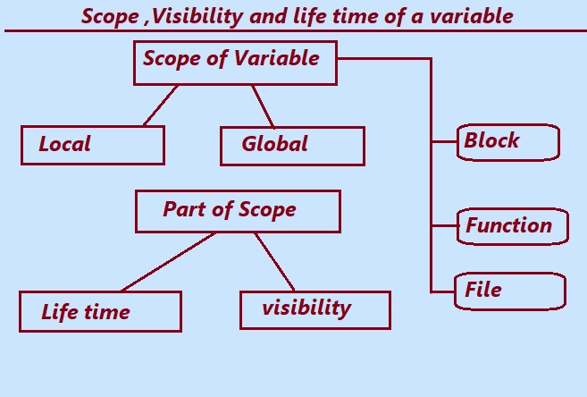

Scope and Life time of a variable: The scope of a variable in C is the area where the variable can be accessed or used .
The scope is the region in which variable can be used. Variables can not be used Out of that area.
There are Two scopes for C variables.
Local Scope and Global Scope.
1. Local Scope: The local scope is limited to the code or function in which the variable is declared.
2. Global Scope: The global scope of a variable or function in C is the region outside any blockb of code or function. The Global variables are visible in entire part of the program.
The variables declared in the global scope are known as global variables.
Scope ,visibility and life time of a variable in C Programming.

Life time: Life time of a variable in c program is the alive state or life of a variable in the memory.
It is the time or life of a variable how long does the variable holds in the memory. The life time of a variable is automatic and static. The life time of a Local variable remains active till the end of program .
The following example given is a simple implementation of local variable and global variable in C programming.
The variable that is declared in a function or code is called a local variable.A local variables can not be used outside the function in which They are declared. The scope of Local variables
remains within the defined function body or block of code only.
Program of local variables in C.
#include <stdio.h>
void employee()
{
// Local Variables of the function
int salary= 20000;
float bonus = 0.45;
printf("\nEmployee Salary is = %d \n", salary);
printf("\n Employee Bonus is= %f", bonus);
}
int main()
{
employee();
return 0;
}
Output:
Employee Salary is =20000
Employee Bonus is=0.450000
Explanation:In the program given above, inside the the definition of employee() function the variables are declared and initialized. The local variable salary has declared as int data type and assigned the value 20000, similarly the variable bonus has declared as float and assigned value 0.45. The scope and life of these variable remains local to the employee() function and cannot be used outside the function.
Inside the main function the employee() function is called and gives the following output.
Employee Salary is =20000
Employee Bonus is=0.450000
Global Variable:The variable whose scope remains through the entire program is called global variable in C. Global variables are not defined inside any function and can be accessed and used in any function.
Program of Global variables in C.
#include <stdio.h>
//Declaring Global Variable
int salary= 20000;
float bonus = 0.45;
void employee()
{
printf("\n Details inside employee() function");
printf("\nEmployee Salary is = %d \n", salary);
printf("\n Employee Bonus is= %f", bonus);
}
int main()
{
employee();
printf("\n Details inside main() function");
printf("\nEmployee Salary is = %d \n", salary);
printf("\n Employee Bonus is= %f", bonus);
return 0;
}
Output:
Details inside employee() function
Employee Salary is =20000
Employee Bonus is=0.450000
Details inside main() function
Employee Salary is =20000
Employee Bonus is=0.450000
Explanation:The variables salary and bonus has declared and initialized outside the function's definition. These variables are global whose values can be used and accessed within or outside the function and any where in main() function. .
Variables Types on the Basis of Lifetime or Storage Class in C.
There are 4 types of keyword variables in C programming. These Variables use the special keywords before their definition. These keywords are reserved word and have specific meaning and purpose. The keyword defines the use and the purpose of the variable. The scope of these variable will be global, local or both depending on type of variables.
a.Static Variable:
The Static is the keyword in C language. Static keyword is used to define static variable. The scope of static depends on the area of its declaration. The scope of variable is local If a static variable is defined within a function. If the a variable declared outside the function, its scope is global. The life time of the static variable remains throughout the program and its life time. Static variable holds its value whenever a program is called. The default value of the static variable is 0.
Syntax:
static data_type variable_name = initial_value;
C program demonstrate static keyword.
/*
The program given below increase the value of static variable 10
every time when the function is called.
*/
#include <stdio.h>
void inc_val()
{
int p = 20; // Local variable declaration
static int q = 30; // Static variable
p = p + 10;
q = q + 10;
printf("\nThe value of local variable : %d ", p);
printf("\nThe value of Static variable : %d ", q);
}
int main()
{
inc_val();
printf("\nCalling inc_val function 2nd time ");
inc_val();
printf("\nCalling inc_val function 3rd time ");
inc_val();
return 0;
}
OUTPUT :
The value of local variable: 30
The value of Static variable: 40
Calling inc_val function 2nd time
The value of local variable: 30
The value of Static variable: 50
Calling inc_val function 3rd time
The value of local variable: 30
The value of Static variable: 60
b.Auto Variable :When the Variables in C is declared with an auto keywords are known as automatic variables.
By default the variables declared inside the function body or block of function are known as automatic variable.
The scope of auto variable is local by default in the function, where it is declared.The lifetime of a auto variable is local to the function body.The auto keyword is used to declare the automatic variable.A auto variable can be accessed inside nested blocks within the parent function or block in which the auto variable was declared.
The default value for it is garbage.
Syntax:
auto data_type Name_of_Variable = value;
Or
data_type Name_of_Variable = value;
Program to use automatic variable in C
#include <stdio.h>
void auto_value()
{
auto int y = 20; //automatic variable
int x = 10; //local variable
printf("The value of automatic variable y is : %d \n", y);
printf("The value of local variable x is : %d \n", x);
}
int main()
{
auto_value; //calling function
return 0;
}
OUTPUT :
The value of automatic variable y is: 20
The value of local variable x is: 10
c. Register Variable:
Register variable is a local variable.
It uses register keyword before its definitions and it is stored in the CPU register. The processing of these variables is very fast.If a value is not assigned to the variable the default value of the register variable is garbage. Lifetime of this vriable remains till to the end of the function.
Syntax:
register data_type variable_name = initial_value
Program to declare and initialize register variable
#include <stdio.h>
int main()
{
register int p = 530; // Declaring and initialize register variable
printf("The value of register variable p is %d", p);
return 0;
}
OUTPUT:
The value of register variable p is 530
d. Extern Variable:
The scope of these variable is global . The extern keyword is used before the variable definition.By using the extern keyword it enhances the variable visibility.This variable can be used in different C files . The lifetime of extern variable reamains in the entire program. extern variable need not to initialize at the time of its declaration.
Syntax:
extern data_type variable_name;
extern variable example in C
//file1.c
int n=120;
//file2.c
extern int n;
int main()
{
printf("The value of n is %d", n);
return 0;
}
Output:
The value of n is 120
In the example given above, In the file1.c we have defined a global variable “n” and we want to use it in another file file2.c . We have declared the variable n as “extern” in the second file to let the compiler know that it is defined externally in another file.
Previous Topic:-->> Passing array to Function || Next topic:-->>Function Assignments.
Other Topics:
Variables and Identifiers
Relational Operators
if-else statements
Switch case
While Loop
Infinite while Loops
C FOR Loop
Infinite for Loops
Continue in Loops
One Dimensional Array
Two Dimensional Arrays
Read and Display 2D Arrays
Types of functions
Passing Array To Functions
Nesting of Function
Array vs Structure
Array of Structure
Structures and Functions
Structures Within Structures
Use Of Pointers In C
File Handling In C
Loops FAQ
Arrays FAQ
count vowels in a file
Function FAQ
Conditional Statements Assignments
For Loops Assignments
Arrays Assignments
Function Assignments
Structure Assignments
Pointers Assignments
Files Assignments
Storage classes Assignments
Binary Files
count words,lines in a file
Copy files
Update File
Continue in Loops
break in Loops
Difference Between While and Do while
difference while do..while & for
malloc
calloc
Storage Classes
Operators MCQ
Conditional Statements MCQ
Loops MCQ
Arrays MCQ
Function MCQ
Structure MCQ
Pointers MCQ
Files MCQ
Storage classes MCQ